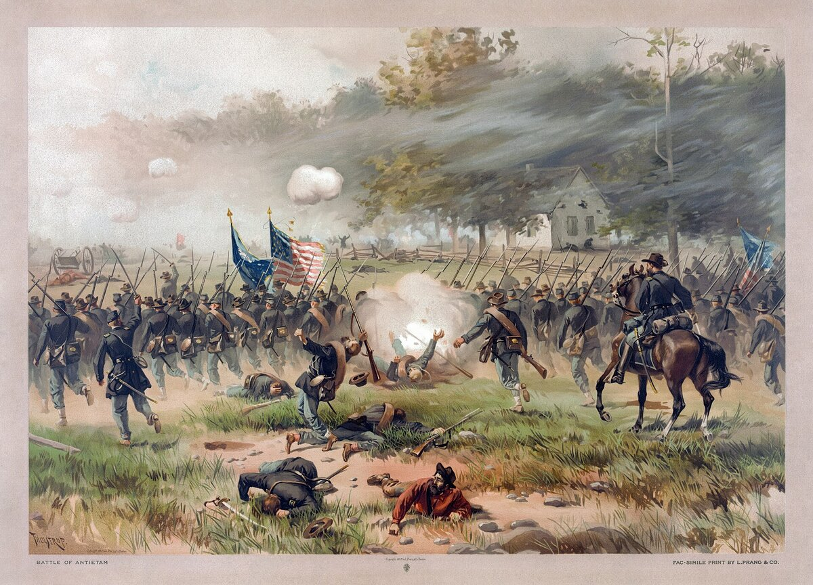

B1 · American History
Abraham Lincoln and the Civil War
He was elected without a single southern vote, and eleven states left before he reached the capital.
Reading
Play the audio and follow along, then read it again on your own. Tap or hover over a highlighted word to see what it means.
In the election of November 1860, Abraham Lincoln won without carrying a single southern state. In several of them his name had not even been printed on the ballot.
Lincoln was not promising to abolish slavery where it already existed. He was promising to stop it spreading into the new western territories. For the southern states that was enough, because a country that kept adding free states would eventually have the votes to end slavery everywhere.
Between December 1860 and the following spring, eleven states declared that they were leaving the United States and formed the Confederate States of America. Their own declarations give the reason in plain language: they say that slavery is the cause.
The war began in April 1861, when Confederate guns fired on Fort Sumter, a federal fort in the harbor of Charleston, South Carolina. Nobody was killed in the bombardment. The next four years killed something like 620,000 soldiers, and modern estimates go higher.

Both sides expected a short war. Civilians drove out from Washington with picnics to watch the first big battle, at Bull Run in July 1861, and then fled back to the city with the defeated army.
At the start Lincoln said the war was about the Union, not about slavery, because four slave states had stayed loyal and he could not afford to lose them. He wrote that if he could save the Union without freeing a single enslaved person, he would do it.
That changed in 1862. Enslaved people were already making the decision for him, walking into Union camps in their thousands. In September, after a hard battle at Antietam, Lincoln announced the Emancipation Proclamation, which took effect on 1 January 1863 and declared free the enslaved people in the states still in rebellion.
Its limits were real: it did not apply to the loyal slave states. Its effect was enormous anyway. It turned a war about the Union into a war about slavery, made European support for the Confederacy politically impossible, and opened the army to Black soldiers. About 180,000 of them served.
In November 1863 Lincoln spoke for about two minutes at the dedication of a cemetery at Gettysburg. The main speaker that day talked for two hours; almost nobody remembers a word of it. Lincoln's 272 words argued that the war was a test of whether a country founded on the idea of equality could survive at all.
The Confederate army surrendered at Appomattox on 9 April 1865. Five days later Lincoln was shot in a theater in Washington. In December, the Thirteenth Amendment abolished slavery throughout the United States — the legal end of the thing the war had been fought over.
Key Vocabulary
- a ballot the paper on which people record their vote
- to abolish to end a law or system officially
- to secede to formally leave a country or union
- the Confederacy the eleven southern states that left the United States in 1860–61
- the Union the United States, and in the war the northern side
- a bombardment a continuous attack with guns or bombs
- a civilian a person who is not in the army
- loyal staying faithful to a country, person or cause
- emancipation the act of setting people free
- to surrender to stop fighting and accept defeat
- eventually in the end, after a long time — careful: not 'from time to time'
Abraham Lincoln and the Civil War — B1 · American History · Renan the Teacher, English Language Academy · https://renangrossi.github.io/englishclasses/reading/b1/lincoln-and-the-civil-war.html
Interactive Exercises
Practice
Complete each exercise, then click Submit to see your score and an explanation for every answer.
Speaking & Writing
Discussion
There are no right answers here — use these to practice speaking, or write a short answer to each.
- Lincoln changed what the war was about in the middle of it. Was that leadership or politics — or both?
- The Gettysburg Address is remembered and the two-hour speech is forgotten. What makes a short speech last?
- Enslaved people walked into Union camps before any law freed them. How much of history is decided by people acting before the law catches up?